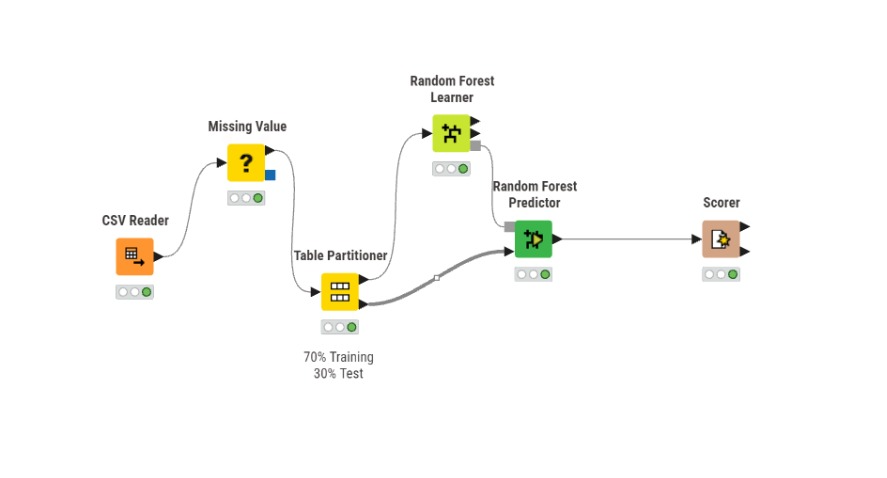
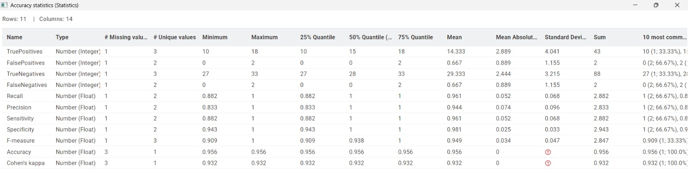

Random Forest#

Workflow ini digunakan untuk melakukan proses klasifikasi data menggunakan metode Random Forest pada KNIME Analytics Platform.
Proses diawali dengan node CSV Reader untuk membaca dataset. Selanjutnya node Missing Value digunakan untuk menangani data yang kosong atau missing value pada dataset. Setelah itu, data dibagi menjadi data training dan data testing menggunakan node Table Partitioner dengan pembagian 70% data training dan 30% data testing.
Node Random Forest Learner digunakan untuk membangun model klasifikasi Random Forest berdasarkan data training. Model yang telah dibuat kemudian digunakan oleh node Random Forest Predictor untuk melakukan prediksi terhadap data testing.
Hasil prediksi kemudian dievaluasi menggunakan node Scorer untuk mengetahui performa model, seperti confusion matrix dan tingkat akurasi klasifikasi.
Dataset#
Dataset yang digunakan pada proyek ini adalah dataset Iris. Dataset ini berisi 150 data bunga iris yang terbagi menjadi 3 jenis spesies, yaitu Iris-setosa, Iris-versicolor, dan Iris-virginica.
Struktur Dataset#
No |
Nama Kolom |
Tipe Data |
Deskripsi |
|---|---|---|---|
1 |
sepal_length |
Float |
Panjang kelopak bunga |
2 |
sepal_width |
Float |
Lebar kelopak bunga |
3 |
petal_length |
Float |
Panjang mahkota bunga |
4 |
petal_width |
Float |
Lebar mahkota bunga |
5 |
species |
String |
Jenis spesies bunga iris |
Target Klasifikasi#
Target |
|---|
Iris-setosa |
Iris-versicolor |
Iris-virginica |
Kolom species digunakan sebagai target klasifikasi pada metode Random Forest, sedangkan kolom lainnya digunakan sebagai atribut prediksi.
Hasil Evaluasi Model Random Forest#

Berdasarkan hasil pengujian menggunakan node Scorer pada KNIME, model Random Forest menghasilkan performa klasifikasi yang sangat baik pada dataset Iris.
Accuracy Statistics#
Metric |
Nilai |
|---|---|
Accuracy |
0.956 |
Cohen’s Kappa |
0.932 |
Precision |
0.944 |
Recall |
0.961 |
Specificity |
0.981 |
F-Measure |
0.949 |
Penjelasan Metric#
Metric |
Deskripsi |
|---|---|
Accuracy |
Tingkat ketepatan model dalam melakukan klasifikasi data |
Precision |
Tingkat ketepatan prediksi positif yang dilakukan model |
Recall |
Kemampuan model dalam menemukan data yang benar |
Specificity |
Kemampuan model membedakan kelas negatif |
F-Measure |
Nilai gabungan antara Precision dan Recall |
Cohen’s Kappa |
Tingkat kesesuaian hasil prediksi model |
Kesimpulan#
Model Random Forest memperoleh nilai accuracy sebesar 95.6%, yang menunjukkan bahwa model mampu melakukan klasifikasi dataset Iris dengan sangat baik.